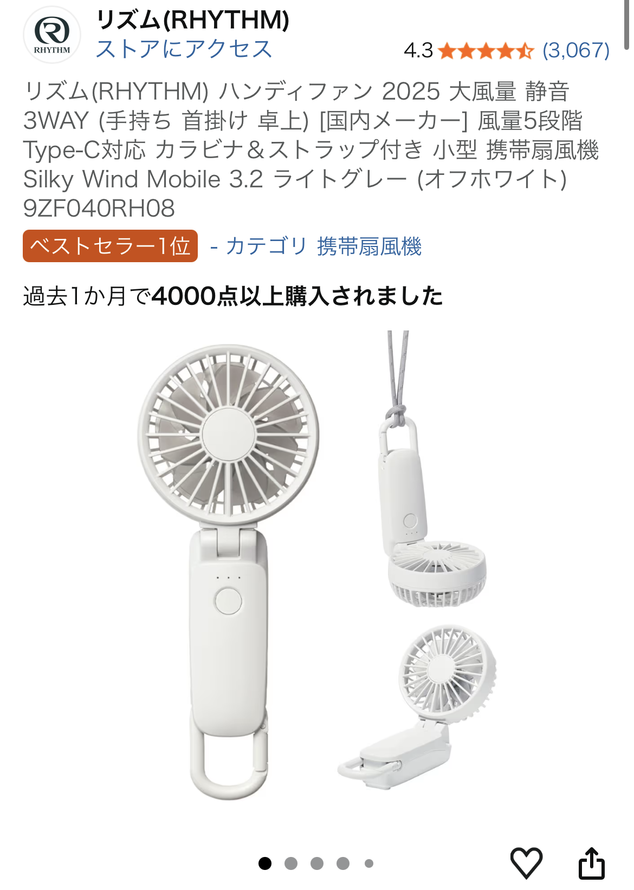

2026年5月6日に投稿された★5レビューをもとに、 「雑誌掲載で衝動買いしたけど、結果マストバイだった」 と評価された 携帯ハンディファン（ライトグレー／2025モデル）を詳しくレビューします。
このモデルは雑誌で特集されていたこともあり、 「気軽に買える価格なのに、機能がしっかりしている」と高評価を得ています。
特にライトグレーのカラーは落ち着いていて、 バッグや服装に合わせやすいのも人気の理由です。
口コミで最も評価されていたのがカラビナの便利さ。 バッグの外側に引っ掛けておけるため、取り出しやすく、 「いざ使いたい時にすぐ使える」点が非常に実用的です。
紐の長さを細かく調整できるため、 首の近くまで引き上げて固定できる のが大きなメリット。
両手が塞がっている時でも風をしっかり受けられるため、 ・通勤 ・フェス ・子どもの送迎 など、さまざまなシーンで活躍します。
風量は段階調整が可能で、 「弱は静かで心地よく、強はしっかり涼しい」とバランスが良い設計。
屋内・屋外どちらでも使いやすいのが魅力です。
携帯ハンディファンは数多くありますが、 カラビナ＋紐調整＋風量調整 の3点が揃ってこの価格はかなり優秀です。
雑誌掲載モデルということもあり、デザイン性も高く、 外出時の“涼しさの保険”として1つ持っておくと安心です。